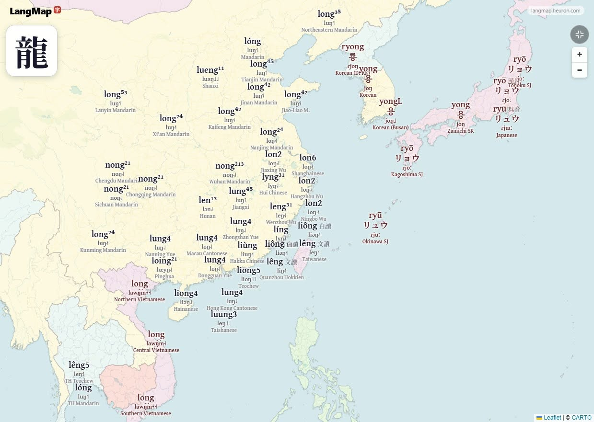

Sinosphere · · revised · Facebook post
One Character, Many Voices: 龍
- The character 龍, "dragon", is read lóng, lung, lîng, yong, ryong, ryū and long across East Asia.
- Each reading has drifted in its own direction, yet all of them go back to one Chinese syllable.
- Behind the borrowed readings, Japanese, Korean and Vietnamese also kept their own native words for the dragon.

Contents
One character, one map
Put a single character on the map and let every language read it aloud.
龍 means dragon.
In Beijing:
龍 (lóng)
In Hong Kong:
龍 (lung4)
In Seoul and in Pyongyang:
龍 (yong / ryong)
In Tokyo:
龍 (ryū)
In Hanoi:
龍 (long)
Five capitals, five languages that cannot understand one another.
And yet anyone can hear that these are the same word.
They are. Every one of these readings goes back to the same Chinese syllable, which Baxter–Sagart reconstruct for Old Chinese as *[mə]-roŋ.
What the map shows is how far each language let that syllable drift.
Inside China: one syllable, many accents
Zoom into China and the dragon keeps changing shape.
Mandarin (Beijing): lóng
Shanghainese: lon6
Wenzhou Wu: long³¹
Cantonese: lung4
Taishanese: luung3
Taiwanese Hakka: liung2
Fuzhou: lṳ̀ng
Teochew: lêng5
The vowel moves. The tone moves.
But in Sichuan and Hubei, even the first consonant moves:
Chengdu: nong²¹
Chongqing: nong²¹
Wuhan: nong²¹³
These are all Mandarin varieties, yet the dragon starts with n.
In much of Southwestern Mandarin, l and n have merged, so "dragon" sounds the way a Beijing speaker would say nóng.
Hokkien goes one step further. Taiwanese keeps two readings of 龍 side by side:
lîng (colloquial, 白讀)
liông (literary, 文讀)
One for everyday speech, one for reading characters aloud in a more formal style.
Korea: the dragon loses its r
Korea is split down the middle.
South Korea: 용 (yong)
North Korea: 룡 (ryong)
The Han Map gives Middle Korean as 룡 (lyong), with the liquid still at the front.
Modern South Korean spelling follows the initial-sound rule (두음법칙): an r/l at the very start of a word is dropped or changed.
So 龍 alone is 용.
But inside a word, where the sound is no longer initial, the old consonant comes back:
恐龍 = 공룡 (gongnyong), "dinosaur"
North Korean spelling does not apply the rule, so the dragon keeps its r everywhere: 룡.
Japan and Vietnam: borrowed twice
Japanese has more than one Sino-Japanese reading for 龍, because characters entered Japan in more than one wave:
ryū (as in 恐竜 kyōryū, "dinosaur")
ryō (as in 画竜点睛 garyō tensei, "the finishing touch")
Vietnamese reads the character long, the Sino-Vietnamese reading.
But Vietnamese also has rồng, the everyday word for dragon.
The Han Map files rồng under the Old Sino-Vietnamese layer: an earlier borrowing of the same Chinese word, which became so thoroughly Vietnamese that it no longer feels borrowed at all.
So Vietnamese has the dragon twice:
rồng: the dragon of folk tales and everyday speech
long: the dragon of Sino-Vietnamese words and names
The dragons that were never borrowed
Japanese and Korean also kept their own native words.
Japanese: たつ (tatsu), the kun reading of 龍
Korean: 미르 (mireu), an old native word for dragon
Tatsu is still the dragon of the zodiac year, 辰 (tatsu).
Mireu survives mainly as an archaic word, known from older texts.
Under all the borrowed ryū, yong and long, a local dragon was already there.
One syllable, many voices
Go back to the map.
lóng, nong, lung, lîng, yong, ryong, ryū, long
The dragon traded its final -ng for a long vowel in Japan, lost its r in Seoul, turned into n in Chengdu and split into two readings in Taiwan.
None of these is a "wrong" version of Mandarin. Each is what that language did with the same old syllable over many centuries.
One character on paper. A whole map of voices out loud.